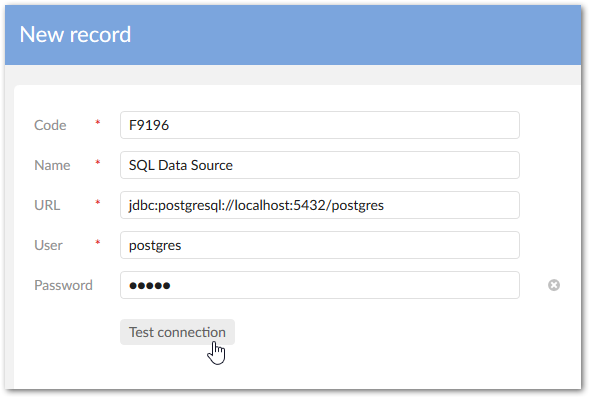
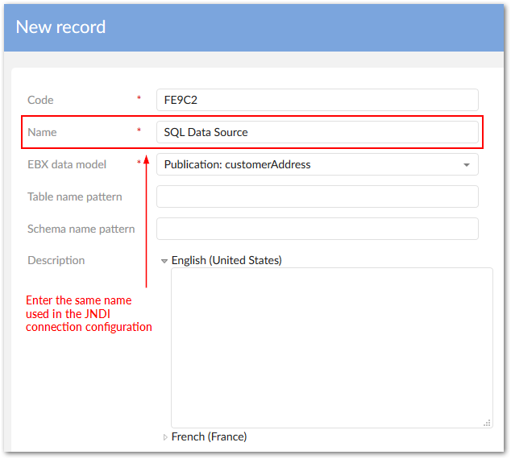

Administrators can create a connection to an SQL data source by:
Configuring all settings via the add-on.
Defining the connection information in the application server. Then, using the connection information, associate the database or view to a data model.
To define a JNDI database connection and associate it with a data model:
Navigate to Administration > Integration > TIBCO EBX® Data Exchange Add-on > Reference data > JNDI data source and create a new record.
Define the following connection parameters:
Name: The connection name you specify will be used in a later configuration step to associate this connection information with a data model.
URL: Add the appropriate URL for this database connection.
User/Password: The permissions obtained from the login credentials will be granted to each EBX® user accessing this data source.
Click Test connection to check configuration settings and save and close if successful.

Navigate to the SQL data source table and create a new record.
Associate the previously created connection to a data model using the following properties:
Name: You must enter the same name used for the JNDI connection.
EBX® data model: Select the data model publication to link to this connection.
If desired, use the optional properties to filter schemas and tables and add a description.

After saving and closing, users can access the SQL import and export services.
You can setup an SQL data source connection in your application server and use the add-on to associate the data source with an EBX® data model publication. The connection configuration requirements differ from environment to environment. Please, consult your application server's documentation. The high-level steps are outlined below:
Configure the JNDI data source in your application server.
Expose any required resources to the ebx, ebx-manager, and ebx-addon-adix web applications.
Use the add-on to create a configuration that links the data source to an EBX® data model publication.
The example below demonstrates how configuration might be completed using Tomcat 8.5:
In the server.xml file, use a Resource to declare the JNDI data source. Note that the JDBC driver for this resource must deployed in Tomcat's lib folder. Additionally, you may need to refer to Tomcat's documentation for the correct Resource parameter values.
<GlobalNamingResources>
<Resource name="jdbc/postgres" auth="Container"
type="javax.sql.DataSource" factory="org.apache.commons.dbcp.BasicDataSourceFactory" driverClassName="org.postgresql.Driver"
url="jdbc:postgresql://123.1.2.3:5432/postgres"
username="postgres" password="postgres" maxActive="20" maxIdle="10" maxWait="-1"/>
</GlobalNamingResources>
In the server.xml file, add a ResourceLink to the ebx, ebx-manager and ebx-addon-adix contexts that links to the JNDI resource created in the first step.
<Host name="localhost" appBase="webapps" workDir="work" unpackWARs="false" autoDeploy="false"> <Context path="/ebx" docBase="ebx.war"> <ResourceLink name="jdbc/postgres" type="javax.sql.DataSource" global="jdbc/postgres"/> </Context> <Context path="/ebx-manager" docBase="ebx-manager.war"> <ResourceLink name="jdbc/postgres" type="javax.sql.DataSource" global="jdbc/postgres"/> </Context> <Context path="/ebx-addon-adix" docBase="ebx-addon-adix.war"> <ResourceLink name="jdbc/postgres" type="javax.sql.DataSource" global="jdbc/postgres"/> </Context> </Host>
In each webapp's web.xml file, declare the JNDI resource.
<resource-ref> <res-ref-name>jdbc/postgres</res-ref-name> <res-type>javax.sql.DataSource</res-type> <res-auth>Container</res-auth> </resource-ref>
Navigate to the Administration > Integration > TIBCO EBX® Data Exchange Add-on > Reference data > SQL data source table and create a new record.
Associate the data source configuration with a published data model using the following properties:
Name: You must enter the same name used by the Resource, in this case jdbc/postgres.
EBX® data model: Select the data model publication to link with this connection.
When you save the record the add-on validates the connection information. Upon successful save, users can access the SQL import and export services.